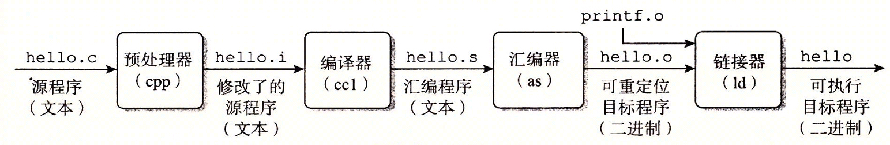

Operating System Concepts 4 - Threads & Concurrency
- 1 Overview
- 2 Multicore Programming
- 3 Multithreading Models
- 4 Thread Libraries
- 5 Implicit threading
- 6 Threading Issues
1 Overview
A thread is a basic unit of CPU utilization; it comprises a thread ID, a program counter, a register set, and a stack.
线程是一个CPU利用的基本单元，它由线程ID，程序计数器、寄存器集合和栈组成。
A traditional process has a single thread of control. If a process has multiple threads of control, it can perform more than one task at a time.
一个传统的进程只有单个控制线程，如果进程有多个控制线程，那么它能一次处理多个任务。
The figure below illustrates the difference between a traditional single-threaded process and a multithreaded process.

1.1 Motivation
Process creation is time consuming and resource intensive. It is generally more efficient to use one process that contains multiple threads.
1.2 Benefits
The benefits of multithreaded programming can be broken down into four major categories:
Responsiveness
- It allows a program to continue running even if part of it is blocked or is performing a lengthy operation, thereby increasing responsiveness to the user.
- 响应度高：即使程序部分阻塞或执行较冗长操作，该程序仍能继续执行，从而增加了对用户的相应程度。
Resource sharing
- Processes can share resources only through techniques such as shared memory and message. Such techniques must be explicitly arranged by the programmer.
- Threads share the memory and the resources of the process to which they belong by default.
- 资源共享：线程默认共享它们所属进程的内存和资源。代码和数据共享的优点是它允许一个应用程序在同一地址空间有多个不同的活动线程。
Economy
- Allocating memory and resources for process creation is costly. Because threads share the resources of the process to which they belong, it is more economical to create and context-switch threads.
- 经济：进程创建所需要的内存和资源的分配比较昂贵。由于线程能共享它们所属进程的资源，所以创建和切换线程会更为经济。
Scalability
- The benefits of multithreading can be even greater in a multiprocessor architecture, where threads may be running in parallel on different processing cores.
- 可扩展性: 多线程的优点之一是能充分使用多处理器体系结构。以便每个进程能并行运行在不同的处理器上。
2 Multicore Programming
On a system with a single computing core, concurrency merely means that the execution of the threads will be interleaved over time, because the processing core is capable of executing only one thread at a time.
On a system with multiple cores, however, concurrency means that some threads can run in parallel, because the system can assign a separate thread to each core.

Note: Concurrency v.s. Parallelism
- Concurrency: supports more than one task by allowing all the tasks to make progress.
- Parallelism: perform more than one task simultaneously.
2.1 Programming Challenges
- Identifying tasks. This involves examining applications to find areas that can be divided into separate, concurrent tasks.
- Balance. Programmer must ensure that the tasks perform equal work of equal value.
- Data splitting. The data accessed and manipulated by the tasks must be divided to run on separate cores.
- Data dependency. The data accessed by the tasks must be examined for dependencies between two or more tasks.
- Testing and debugging. Testing and debugging such concurrent programs is inherently more difficult than testing and debugging single-threaded applications.
2.2 Types of Parallelism
In general, there are two types of parallelism: data parallelism and task parallelism.
- Data parallelism focuses on distributing subsets of the same data across multiple computing cores and performing the same operation on each core.
- Task parallelism involves distributing not data but tasks (threads) across multiple computing cores.
- However, data and task parallelism are not mutually exclusive, and an application may in fact use a hybrid of these two strategies.
Data and task parallelism

3 Multithreading Models
Support for threads may be provided either at the user level, for user threads, or by the kernel, for kernel threads.
- User threads are supported above the kernel and are managed without kernel support.
- Kernel threads are supported and managed directly by the operating system.
有两种不同的方法来提供线程支持：用户层的用户级线程和内核层的内核级线程。用户级线程受内核支持，而无需内核管理；而内核级线程由操作系统直接支持和管理。事实上所有当代操作系统都支持内核级线程。
Ultimately, a relationship must exist between user threads and kernel threads. There are three common ways of establishing such a relationship: the many-to-one model, the one-to-one model, and the many-to-many model.
在用户级线程和内核级线程之间必然存在一种关系。有三种普遍建立这种关系的方法：多对一模型、一对一模型、多对多模型。
3.1 Many-to-One Model
The many-to-one model maps many user-level threads to one kernel thread. 多对一模型将许多用户级线程映射到一个内核线程。
- Thread management is done by the thread library in user space, so it is efficient. 线程管理由线程库在用户空间进行的，因而效率比较高。
- Also, because only one thread can access the kernel at a time, multiple threads are unable to run in parallel on multicore systems. 因为任意时刻只能有一个线程能够访问内核，多个线程不能并行运行在多处理器上。

3.2 One-to-One Model
The one-to-one model maps each user thread to a kernel thread. 一对一模型每个用户线程映射到一个内核线程。
- It provides more concurrency by allowing another thread to run when a thread makes a blocking system call. 该模型在一个线程执行阻塞系统调用时，能允许另一个线程继续执行，提供了更高的并发性。
- It also allows multiple threads to run in parallel on multiprocessors. 它也允许多个线程能并行运行在多处理器系统上。
- The only drawback to this model is that creating a user thread requires creating the corresponding kernel thread, and a large number of kernel threads may burden the performance of a system. 这种模型的唯一缺点是每创建一个用户线程就会创建一个相应的内核线程, 大量内核线程会影响系统性能。

3.3 Many-to-Many Model
The many-to-many model multiplexes many user-level threads to a smaller or equal number of kernel threads. 多对多模型多路复用了许多用户线程到同样数量或更小数量的内核线程上。
- Developers can create as many user threads as necessary. 开发人员可创建任意多的用户线程。
- The corresponding kernel threads can run in parallel on a multiprocessor. 相应内核线程能在多处理器系统上并发执行。
- Also, when a thread performs a blocking system call, the kernel can schedule another thread for execution. 而且当一个线程执行阻塞系统调用时，内核能调度另一个线程来执行。
- In practice it is difficult to implement. 实际上难以实施。

Most operating systems now use the one-to-one model.
3.4 User/Kernel-Level threads
(1) User-Level Threads(用户级线程)
Advantages
- Common operations can be implemented efficiently
- Interface can be tailored to application needs
Issues:
- A blocking system call blocks all user-level threads. 阻塞系统调用能够阻塞所有用户级线程。
- Asynchronous system calls can provide partial work-around. 非同步系统调用能提供部分work-around. view the definition of work-around here
- A page fault blocks all user-level threads. 缺页异常阻塞所有用户级线程。
- Matching threads to CPUs in a multiprocessor is hard：
- No knowledge about the numbers of CPUs available to address space
- No knowledge when a thread blocks
(2) Kernel-Level Threads (内核级线程)
Primary advantage
- Blocking system calls and page faults handled correctly
Issues
- Cost of performing thread operations
- Create, exit, lock, signal, wait all require user/kernel crossings
NOTE: The term virtual processor is often used instead of kernel thread.
4 Thread Libraries
A thread library provides the programmer with an API for creating and managing threads. 线程库为程序员提供了创建和管理线程的API。
Pthreads, the threads extension of the POSIX standard, may be provided as either a user-level or a kernel-level library. Pthread作为POSIX标准扩展，可以提供用户级或内核级的库。
pthread_t tid: declares the identifier for the threadpthread attr_t attr: declares the attributes for the threadpthread_attr_init(&attr): initialize thread attributes objectpthread_create(): create a new threadpthread_join(): join with a terminated threadpthread_exit(): terminate calling thread
Note: Compile and link with -pthread.
pthread详细用法和实例, 见POSIX thread (pthread) libraries
5 Implicit threading
Implicit threading(隐式线程): Transfers the creation and management of threading from application developers to compilers and run-time libraries.
- One way to address difficulties and better support the design of concurrent and parallel applications
- The advantage of this approach is that developers only need to identify parallel tasks, and the libraries determine the specific details of thread creation and management.
In this section, we explore four alternative approaches to designing applications that can take advantage of multicore processors through implicit threading:
- Thread Pools
- Fork Join
- OpemMP
- Grand Central Dispatch
5.1 Thread Pools
Two main issues exist:
- The thread will be discarded once it has completed its work. 线程在完成工作之后就要被丢弃
- Unlimited threads could exhaust system resources. 无限制的线程会耗尽系统资源
Solution -> thread pool(线程池)
- It creates a number of threads at start-up, and places them into a pool, where they sit and wait for work.
- When a server receives a request, it submits the request to the thread pool and resumes waiting for additional requests.
- If there is an available thread in the pool, it is awakened, and the request is serviced immediately.
- If the pool contains no available thread, the task is queued until one becomes free.
线程池的思想是在进程开始时创建一定数量的线程，并放入到池中以等待工作。当服务器收到请求时，它会唤醒线程池中的一个线程，并将要处理的请求传递给它，一旦线程完成了服务，它会返回到池中在等待工作。如果池中没有可用的线程，那么服务器会一直等待直到有空线程为止。
Thread pools offer these benefits:
- Servicing a request with an existing thread is often faster than waiting to create a thread. 通常用现有线程处理请求要比等待创建新的线程要快.
- A thread pool limits the number of threads that exist at any one point. 线程池限制了在任何时候可用线程的数量.
- Separating the task to be performed from the mechanics of creating the task allows us to use different strategies for running the task.
Java线程库的一个例子：
import java.util.concurrent.*;
public class ThreadPoolExample
{
public static void main(String[] args) {
int numTasks = Integer.parseInt(args[0].trim());
/* Create the thread pool */
ExecutorService pool = Executors.newCachedThreadPool();
/* Run each task using a thread in the pool */
for (int i = 0; i < numTasks; i++)
pool.execute(new Task());
/* Shut down the pool once all threads have completed */
pool.shutdown();
}
5.4 Grand Central Dispatch
Grand Central Dispatch (GCD) is a technology for Apple's Mac OS X and iOS operating systems. It is a combination of extensions to the C languages, an API, and a run-time library that allows application developers identify sections of code to run in parallel.
- GCD identifies two types of dispatch queues: serial and concurrent.
6 Threading Issues
6.1 Light Weight Process
Many systems implementing either the many-to-many or the two-level model place an intermediate data structure between the user and kernel threads. This data structure—typically known as a lightweight process（轻量级进程）, or LWP.
- To the user-thread library, the LWP appears to be a virtual processor on which the application can schedule a user thread to run.
- Each LWP is attached to a kernel thread.
- If a kernel thread blocks, the LWP blocks as well. Up the chain, the user-level thread attached to the LWP also blocks.


where K denotes kernel threads and P denotes Process.
下面是一个测试LINUX中LWP的C程序
/* filename: test_LWP.c */
#include <stdlib.h>
#include <pthread.h>
#include <stdio.h>
#include <unistd.h>
int* thread(void* arg)
{
pthread_t tid; // the ID of a thread
tid = pthread_self();//get the current thread's id
printf("The ID of new thread is =%lu\n", tid);
sleep(500); //sleep for 500 seconds
return NULL;
}
int main()
{
pthread_t tid;
printf("The ID of main thread is %lu\n", pthread_self()); //get the main thread's id
if (pthread_create(&tid, NULL, (void *) thread, NULL) !=0)
{
printf("Thread creation failed\n");
exit(1);
}
printf("my Id is %lu, new thread ID is %lu\n", pthread_self(), tid);
sleep(1000);
return 0;
}
运行ps -efL 可以看到, test_LWP进程(PID=1953)有两个LWP，即NLWP(number of light weight process)=2。
UID PID PPID LWP C NLWP STIME TTY TIME CMD
vagrant 1953 1644 1953 0 2 04:16 pts/0 00:00:00 ./test_LWP
vagrant 1953 1644 1954 0 2 04:16 pts/0 00:00:00 ./test_LWP
vagrant 2028 1839 2028 0 1 04:18 pts/1 00:00:00 ps -efL
6.2 Scheduler activation
Problems:
内核线程在各方面都比较灵活，但是性能不高，经常会出现请求在用户空间和内核空间的传递。那么如何在拥有内核空间线程的灵活性的同时又提高性能呢?
Solution:
Scheduler activation（调度器激活）are a threading mechanism that, when implemented in an operating system's process scheduler, provide kernel-level thread functionality with user-level thread flexibility and performance [ref].
It works as follows:
- The kernel provides an application with a set of virtual processors (LWPs), and the application can schedule user threads onto an available virtual processor.
- Furthermore, the kernel must inform an application about certain events. This procedure is known as an upcall(向上调用).
- Upcalls are handled by the thread library with an upcall handler, and upcall handlers must run on a virtual processor.
- While the user threading library will schedule user threads, the kernel will schedule the underlying LWPs.
Example [ref]:
Let’s study an example of how scheduler activations can be used. The kernel has allocated one kernel thread (1) to a process with three user-level threads (2). The three user level threads take turn executing on the single kernel-level thread.

- (3) The executing thread makes a blocking system call.
- (4) And the the kernel blocks the calling user-level thread and the kernel-level thread used to execute the user-level thread .
- (5) Scheduler activation: the kernel decides to allocate a new kernel-level thread to the process .
- (6) Upcall: the kernel notifies the user-level thread manager which user-level thread that is now blocked and that a new kernel-level thread is available.
- (7) The user-level thread manager move the other threads to the new kernel thread and resumes one of the ready threads.

CSAPP - 链接
- 1 编译器驱动程序
- 2 静态链接
- 3 目标文件
- 4 可重定位目标文件
- 5 符号和符号表
- 6 符号解析
- 7 重定位
- 8 可执行目标文件
- 9 加载可执行目标文件
- 10 动态链接共享库
- 14 处理目标文件的工具
链接(Linking)是将各种代码和数据片段收集并组合成为一个单一文件的过程。链接可以在编译、加载、运行时执行。在现代系统中，链接由链接器(Linker)自动执行。
链接器使得分离编译(separate compilation)成为可能：
- 可以将源文件分解为更小、更好管理的模块，可以独立地修改和编译这些模块
- 修改一个模块后，只需重新编译它，并重新链接，不必编译其他文件
1 编译器驱动程序
编译器驱动程序(compiler driver)，代表用户在需要时调用预处理器(cpp)、编译器(ccl)、汇编器(as)和链接器(ld)。典型的编译器驱动程序，包括GNU GCC, Clang。
例如，一个简单打印hello的hello.c程序，经过下面四个阶段，生成可执行目标文件：
//file: hello.c
#include <stdio.h>
int main()
{
int i;
printf("Hello World");
}
linux > gcc -o hello hello.c

2 静态链接
静态链接器有两个主要任务：
- 符号解析(symbol resolution): 将每个符号 引用 正好和一个符号 定义 关联起来。
- 重定位(relocation): 把每个符号定义与一个内存位置关联起来，并修改所有对这些符号的引用，使得它们指向这个内存位置。
3 目标文件
目标文件有三种格式：可重定位目标文件(.o)，可执行目标文件(.out)，共享目标文件(.so)
- 可重定位目标文件(.o文件)。包含二进制代码和数据，其形式可以在编译时与其他可重定位目标文件合并起来，创建一个可执行目标文件。
- 可执行目标文件(a.out文件)。包含二进制代码和数据，其形式可以被直接复制到内存并执行。
- 共享目标文件(.so文件)。在加载或者运行时被动态地加载进内存并链接
各个系统的目标文件格式不同，Windows使用可移植可执行(Portable Executable, PE)格式。现代x86-64系统使用可执行可链接格式(Executable and Linkable Format, ELF)。
4 可重定位目标文件
以可执行可链接(ELF)格式为例，一个典型的可重定位目标文件包括以下几个节：
- ELF头和节头部表
.text已编译程序的机器代码.rodata只读数据.data已初始化的全局和静态C变量.bss未初始化的全局和静态C变量.symtab一个符号表.rel.text一个.text节中位置的列表.rel.data重定位信息.debug调试符号表.line原始程序行号和机器指令之间的映射.strtab字符串表

利用READELF程序可以显示程序hello.c生成的可执行可链接文件的信息：
gcc hello.c -c
readelf -a hello.o ## UNIX/LINUX
greadelf -a hello.o ## MAC, after brew install binutils
ELF Header:
Magic: 7f 45 4c 46 02 01 01 00 00 00 00 00 00 00 00 00
Class: ELF64
Data: 2's complement, little endian
Version: 1 (current)
OS/ABI: UNIX - System V
ABI Version: 0
Type: REL (Relocatable file)
Machine: Advanced Micro Devices X86-64
Version: 0x1
Entry point address: 0x0
Start of program headers: 0 (bytes into file)
Start of section headers: 304 (bytes into file)
Flags: 0x0
Size of this header: 64 (bytes)
Size of program headers: 0 (bytes)
Number of program headers: 0
Size of section headers: 64 (bytes)
Number of section headers: 13
Section header string table index: 10
Section Headers:
[Nr] Name Type Address Offset
Size EntSize Flags Link Info Align
[ 0] NULL 0000000000000000 00000000
0000000000000000 0000000000000000 0 0 0
[ 1] .text PROGBITS 0000000000000000 00000040
0000000000000015 0000000000000000 AX 0 0 1
[ 2] .rela.text RELA 0000000000000000 00000590
0000000000000030 0000000000000018 11 1 8
[ 3] .data PROGBITS 0000000000000000 00000055
0000000000000000 0000000000000000 WA 0 0 1
[ 4] .bss NOBITS 0000000000000000 00000055
0000000000000000 0000000000000000 WA 0 0 1
[ 5] .rodata PROGBITS 0000000000000000 00000055
000000000000000c 0000000000000000 A 0 0 1
[ 6] .comment PROGBITS 0000000000000000 00000061
000000000000002c 0000000000000001 MS 0 0 1
[ 7] .note.GNU-stack PROGBITS 0000000000000000 0000008d
0000000000000000 0000000000000000 0 0 1
[ 8] .eh_frame PROGBITS 0000000000000000 00000090
0000000000000038 0000000000000000 A 0 0 8
[ 9] .rela.eh_frame RELA 0000000000000000 000005c0
0000000000000018 0000000000000018 11 8 8
[10] .shstrtab STRTAB 0000000000000000 000000c8
0000000000000061 0000000000000000 0 0 1
[11] .symtab SYMTAB 0000000000000000 00000470
0000000000000108 0000000000000018 12 9 8
[12] .strtab STRTAB 0000000000000000 00000578
0000000000000015 0000000000000000 0 0 1
Key to Flags:
W (write), A (alloc), X (execute), M (merge), S (strings), l (large)
I (info), L (link order), G (group), T (TLS), E (exclude), x (unknown)
O (extra OS processing required) o (OS specific), p (processor specific)
There are no section groups in this file.
There are no program headers in this file.
Relocation section '.rela.text' at offset 0x590 contains 2 entries:
Offset Info Type Sym. Value Sym. Name + Addend
000000000005 00050000000a R_X86_64_32 0000000000000000 .rodata + 0
00000000000f 000a00000002 R_X86_64_PC32 0000000000000000 printf - 4
Relocation section '.rela.eh_frame' at offset 0x5c0 contains 1 entries:
Offset Info Type Sym. Value Sym. Name + Addend
000000000020 000200000002 R_X86_64_PC32 0000000000000000 .text + 0
The decoding of unwind sections for machine type Advanced Micro Devices X86-64 is not currently supported.
Symbol table '.symtab' contains 11 entries:
Num: Value Size Type Bind Vis Ndx Name
0: 0000000000000000 0 NOTYPE LOCAL DEFAULT UND
1: 0000000000000000 0 FILE LOCAL DEFAULT ABS hello.c
2: 0000000000000000 0 SECTION LOCAL DEFAULT 1
3: 0000000000000000 0 SECTION LOCAL DEFAULT 3
4: 0000000000000000 0 SECTION LOCAL DEFAULT 4
5: 0000000000000000 0 SECTION LOCAL DEFAULT 5
6: 0000000000000000 0 SECTION LOCAL DEFAULT 7
7: 0000000000000000 0 SECTION LOCAL DEFAULT 8
8: 0000000000000000 0 SECTION LOCAL DEFAULT 6
9: 0000000000000000 21 FUNC GLOBAL DEFAULT 1 main
10: 0000000000000000 0 NOTYPE GLOBAL DEFAULT UND printf
No version information found in this file.
5 符号和符号表
.symtab中的符号表，有三种不同的符号(不包括本地非静态变量)：
- 由模块\(m\)定义并能被其他模块引用的全局符号。
- 非静态C函数和全局变量
- 由其他模块定义并被模块\(m\)引用的全局符号。
- 对应于其他模块中定义的非静态C函数和全局变量
- 只被模块\(m\)定义和引用的局部符号。
- 静态C函数和全局变量
6 符号解析
符号解析是将每个符号引用和可重定位目标文件中的符号定义关联起来。链接器的输入是一组可重定位目标文件(模块)，有些是局部的( 局部符号 ，只对定义该符号的模块可见)，有些是全局的( 全局符号 ，对其他模块可见)。
- 局部符号：每个模块中每个局部符号有一个定义
全局符号：可重定位目标文件的符号表里的全局符号是区分强和弱的，链接器根据以下规则来处理多重定义的符号名：
- 规则1: 不允许有多个同名的强符号
- 规则2: 如果有一个强符号和多个弱符号同名，那么选择强符号
- 规则3：如果有多个弱符号同名，那么任选一个
7 重定位
重定位合并输入模块，并为每个符号分配运行时地址：
- 重定位节和符号定义：将所有相同类型的节合并为同一类型的新的聚合节，并将运行时内存地址赋给新的聚合节和每个符号定义。
- 例如，来自所有输入模块的
.data节被全部合并成输出的可执行目标文件的.data节
- 例如，来自所有输入模块的
- 重定位节中的符号引用：将运行时地址付给每个符号引用
8 可执行目标文件
下图概括了一个典型的ELF可执行文件的给类信息。

9 加载可执行目标文件
当在shell中执行目标文件时，首先通过调用加载器(loader)的操作系统代码来运行它，加载器将可执行目标文件的代码和数据复制到主存，跳转到程序的第一条指令(入口点，_start_函数的地址)运行该程序。
在Unix系统中，加载器是系统调用(system call)execve()的回调(call back)，其任务包括：
- 确认(权限，内存要求等)
- 复制程序到主存
- 复制命令行参数到栈
- 初始化寄存器(例如栈针)
- 跳到入口点(
_start_)
10 动态链接共享库
静态库有2大缺陷：
- 静态库更新时，需要显示地将程序与更新了的库重新链接
- 浪费内存资源：几乎每个C程序都使用标准I/O函数，这些函数代码会被复制到每个运行进程的文本段中
共享库(shared library)是致力于解决静态库缺陷的产物。
动态链接(dynamic linking)：共享库在运行或加载时，可以加载到任意的内存地址，并和一个在内存中的程序链接起来。
- 由动态链接器(dynamic linke)执行；
- 在linux系统中常用
.so后缀表示。

14 处理目标文件的工具
Unix系统提供了一系列命令帮助理解和处理目标文件。这些工具包括：
ar：创建静态库，插入、删除、列出和提取成员；STRINGS：列出目标文件中所有可以打印的字符串；STRIP：从目标文件中删除符号表信息；NM：列出目标文件符号表中定义的符号；SIZE：列出目标文件中节的名字和大小；READELF：显示一个目标文件的完整结构，包括ELF 头中编码的所有信息。OBJDUMP：显示目标文件的所有信息，最有用的功能是反汇编.text节中的二进制指令。LDD：列出可执行文件在运行时需要的共享库。
Operating System Concepts 1 - Introduction
- what operating system do
- Computer-system organisation
- Interrupt
- multiprogramming and multitasking
- dual-mode
- timer
- virtualization
- Free and Open-Source OS
what operating system do
There is no completely adequate definition of operating system. A simple viewpoint is that it includes everything a vendor ships. A more common definition is that the operating system is the one program running at all times on computer - usually called kernel .
Three main purposes of an operating system are,
- manages a computer's hardware
- provides a basis for application programs
- acts as an intermediary between the user and hardware
The operating system includes the always running kernel, middleware frameworks that ease application development and provide features, and system programs that aid in managing the system while it is running.
Anything between the kernel and user applications is considered middleware(中间件) [1].
Computer-system organisation
A computer system can be divided roughly into four components: the hardware, the operating system, the application programs, and a user.

A computer system(计算机系统) consists of one or more CPUs and a number of device controllers(设备控制器) connected through a common bus(总线) that provides access between components and shared memory.
A device controller maintains some local buffer storage(局部缓冲存储) and a set of special-purpose registers.
Typically, operating systems have a device driver(设备驱动) for each device controller. This device driver understands the device controller and provides the rest of the operating system with a uniform interface to the device

Interrupt
When the CPU is interrupted, it stops what it is doing and immediately transfers execution to a fixed location. The fixed location usually contains the starting address where the service routine for the interrupt is located.
The interrupt routine(中断程序) is called indirectly through the interrupt vector table（中断向量表).
- Generally, the table of pointers is stored in low memory (the first hundred or so locations).
- These locations hold the addresses of the interrupt service routines for the various devices.
- Interrupt vector is then indexed by a unique number(interrupt vector number, 中断向量号)
- interrupt priority levels(中断优先级)

Some services are provided outside of the kernel by system programs that are loaded into memory at boot time to become system daemons, which run the entire time the kernel is running.

interrupt, exception, trap
Unfortunately, there is no clear consensus as to the exact meaning of these terms(exceptions, faults, aborts, traps, and interrupts). Different authors adopt different terms to their own use [ref].
trap(陷阱) or exception(异常): a software-generated interrupt either by an error（e.g. division by zero, or invalid memory access or by a system call.
- usual way to invoke a kernel routine (a system call)
interrupt(中断): generated by the hardware (devices like the hard disk, graphics card, I/O ports, etc).
multiprogramming and multitasking
Multiprogramming(多道程序) explained:
- The operating system keeps several processes in memory simultaneously.
- The operating system picks and begins to execute one of these processes.
- Eventually, the process may have to wait for some task, such as an I/O operation, to complete.
- When that process needs to wait, the CPU switches to another process, and so on.
- Eventually, the first process finishes waiting and gets the CPU back. As long as at least one process needs to execute, the CPU is never idle.
Multitasking(多任务) is a logical extension of multiprogramming. In multitasking systems, the CPU executes multiple processes by switching among them, but the switches occur frequently, providing the user with a fast response time.
dual-mode
In order to ensure the proper execution of the system, we must be able to distinguish between the execution of operating-system code（kernel mode）and user-defined code (user mode).

Mode bit(模式位), is added to the hardware of the computer to indicate the current mode: kernel (0) or user (1).
The concept of modes can be extended beyond two modes.
protection rings（保护环) are mechanisms to protect data and functionality from faults (by improving fault tolerance) and malicious behavior (by providing computer security).
For intel processors, ring 0 is kernel mode and ring 3 is user mode

timer
A timer (定时器) can be set to interrupt the computer after a specified period( usually, 100s hz)
- A variable timer is generally implemented by a fixed-rate clock and a counter.
- The operating system sets the counter. Every time the clock ticks, the counter is decremented.
- When the counter reaches 0, an interrupt occurs.
virtualization
virtualization(虚拟化) is a technology that allows us to abstract the hardware of a single computer into several different execution environments, thereby creating the illusion that each separate environment is running on its own private computer .
- v.s. [different] Emulation involves simulating computer handware in software.

Free and Open-Source OS
Open-source OS
- source code available
- opposite: closed-source OS
Free OS
- source code available
- allow no-cost use, redistribution, and modification
Arguably, open-source code is more secure than closed-source code because many more eyes are viewing the code.
e.g. OS
- GNU/Linux
- FreeBSD
- Solaris

Copyright © 2015 Powered by MWeb, Theme used GitHub CSS.